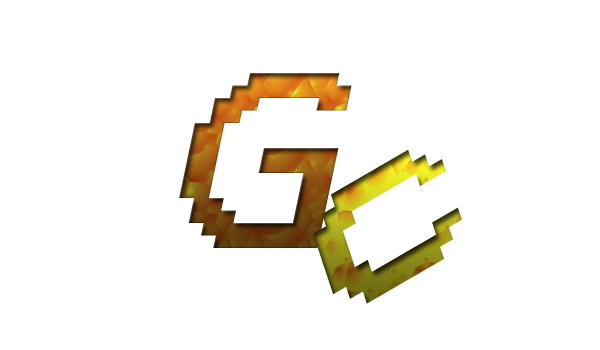

> Si vous êtes fans de L'OM quittez cette page ! (ou pas :p)
Mon autre site web !
> Pourquoi Ducks-skills ?
|
Bonjour et bienvenue sur mon site, |
voici le logo de mon club |
|  | Site Personnel de Corentin Briand, |
|
Bonjour et bienvenue sur mon site, |
voici le logo de mon club |

logo actuel du Paris Saint Germain |